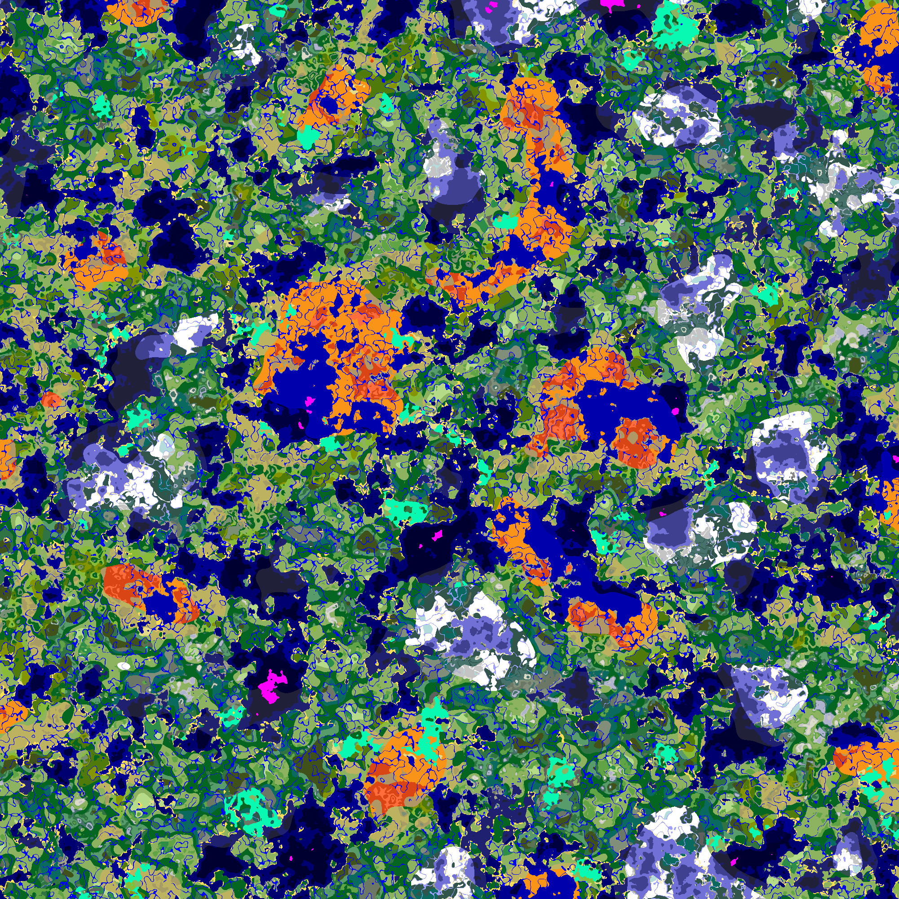

Cubiomes.jl Documentation
Imitation of Minecraft's world generation in Julia.
Julia port of Cubiomes C library
Cubiomes.jl provides a powerful and efficient implementation of Minecraft's world generation algorithms in the Julia programming language. Built as a port of the popular Cubiomes C library, this package offers superior performance while maintaining an elegant and approachable API.
Quick Links
🚀 Getting Started
Install and run your first program
📖 User Guide
Learn core concepts and usage
📚 API Reference
Detailed function documentation
Audience
You should be familiar with programming. That's all. If you are not familiar with Julia, the syntax is quite easy (similar to Python in some ways). You can learn it by working with this package. Look at the Examples or Getting Started pages to see how to use it.
There are already a lot of tools for Minecraft seed generation. Maybe Cubiomes.jl is not the best choice. The goal of this package is to provide more than just a tool to generate Minecraft worlds, with a focus on performance. So it involves writing code, but an easy code thanks to Julia's high-level syntax. An example would be doing some statistics, or very specific seed searches.
New to Julia?
Read the Getting Started page to learn how to install Julia and Cubiomes.jl and run your first program.
Examples
Find a mushroom fields biome at a predefined location:
using Cubiomes
function search_biome_at(gen, x, z, y)
seed = 0
while true
setseed!(gen, seed)
if getbiome(gen, x, z, y) == Biomes.mushroom_fields
println("Seed $seed has a Mushroom Fields at $((x, z, y))")
break
end
seed += 1
end
end
const gen = Overworld(undef, mcv"1.18")
search_biome_at(gen, 0, 0, 63)Seed 262 has a Mushroom Fields at (0, 0, 63)Generate a map of biomes and save it as an image:
using Cubiomes
using FileIO
const overworld1_18 = Overworld(undef, mcv"1.18")
const worldmap = WorldMap(x=-1000:1000, z=-1000:1000, y=63)
setseed!(overworld1_18, 42)
genbiomes!(overworld1_18, worldmap, 📏"1:16")
save("world.png", to_color(view2d(worldmap)))